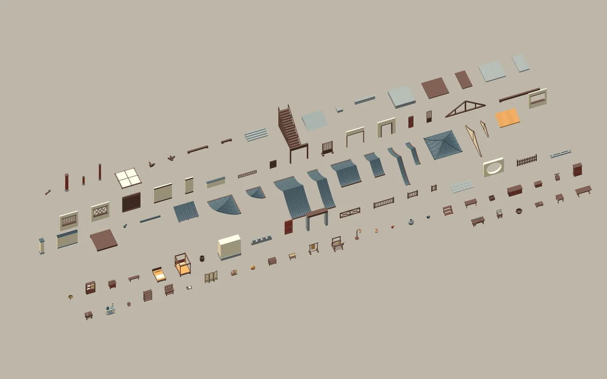
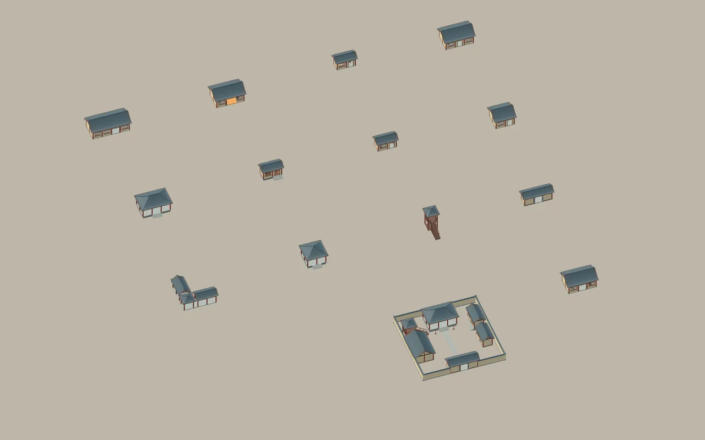
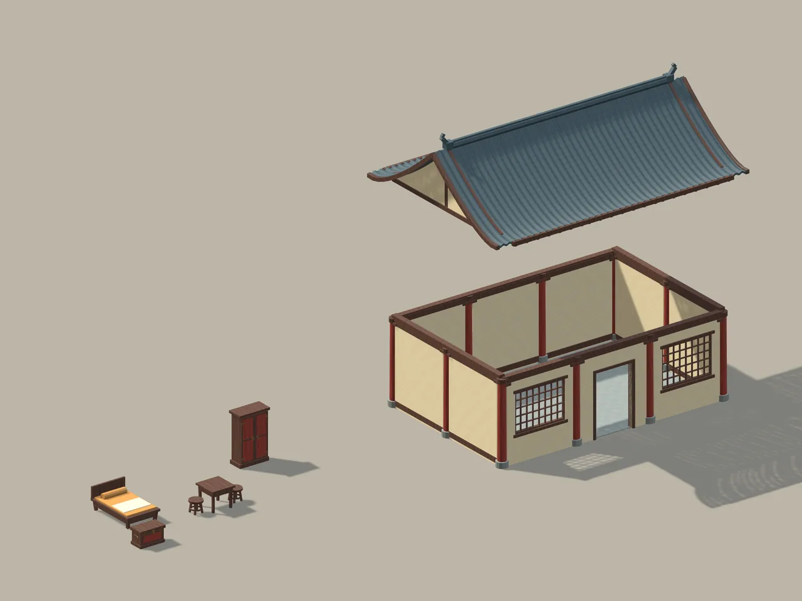
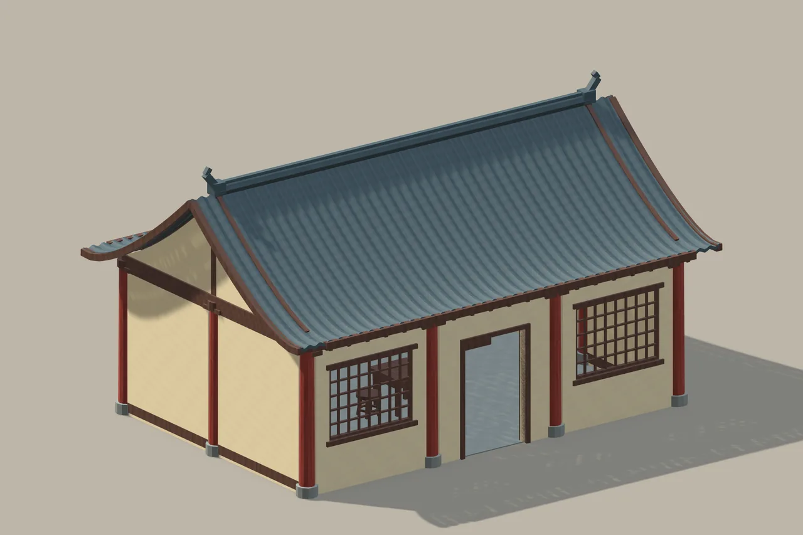
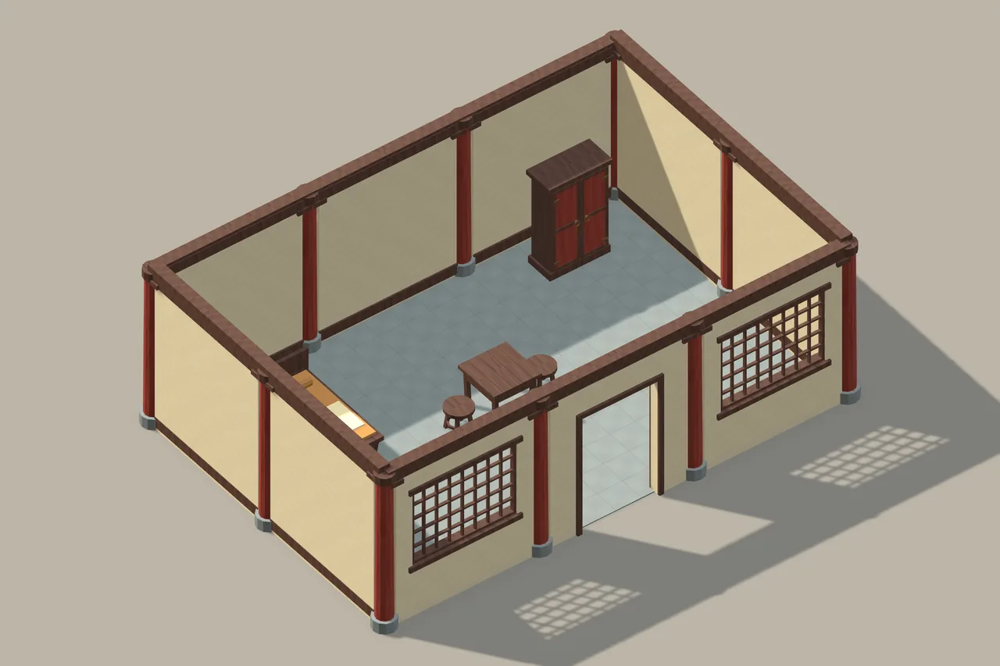
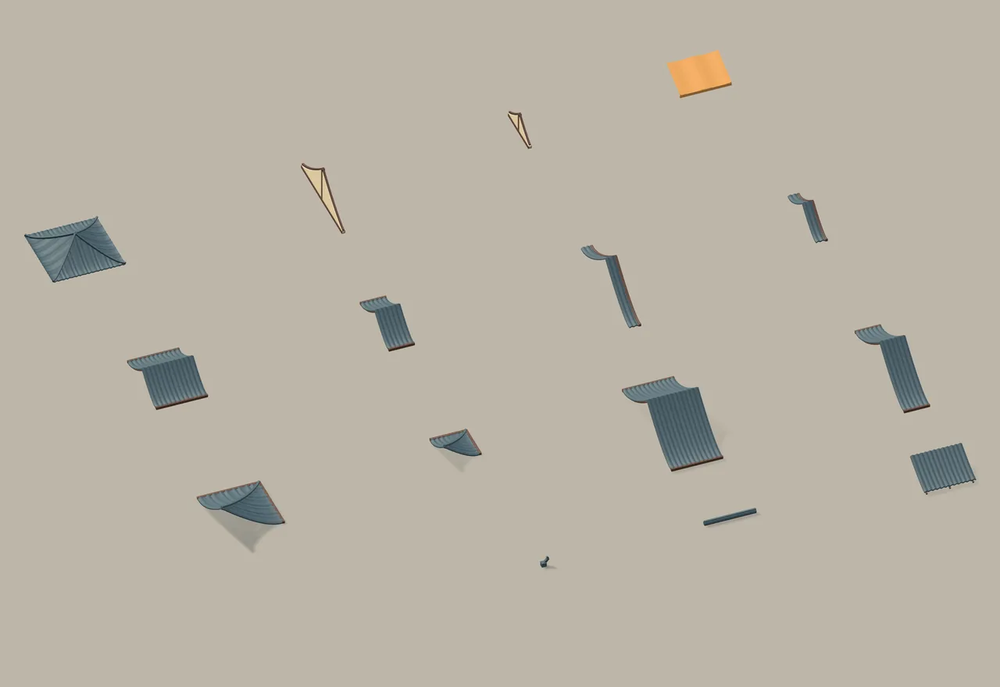
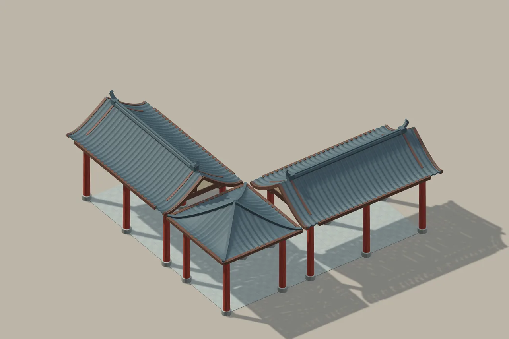
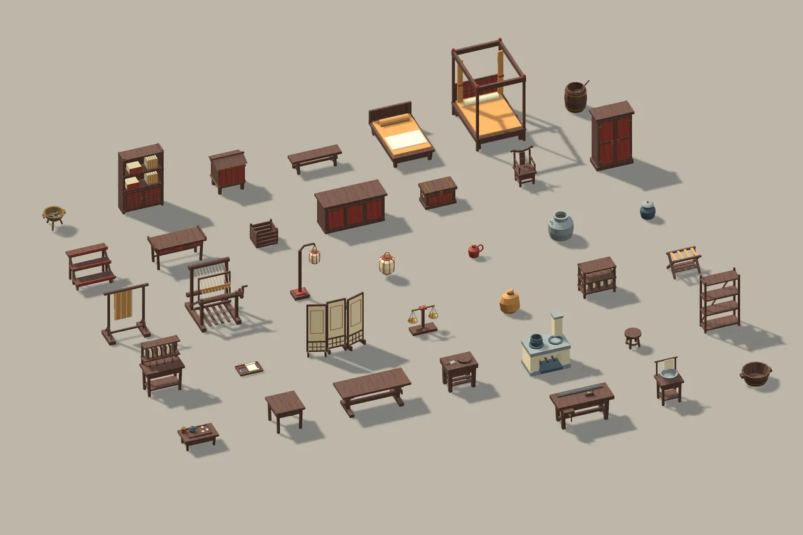
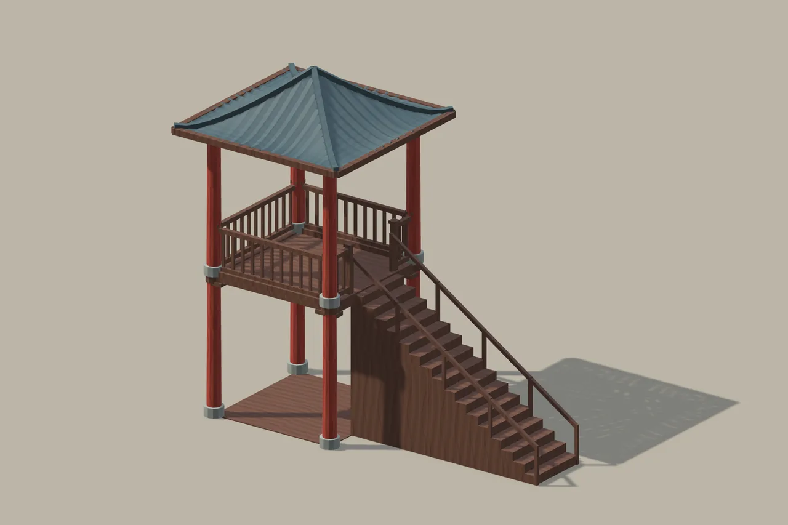
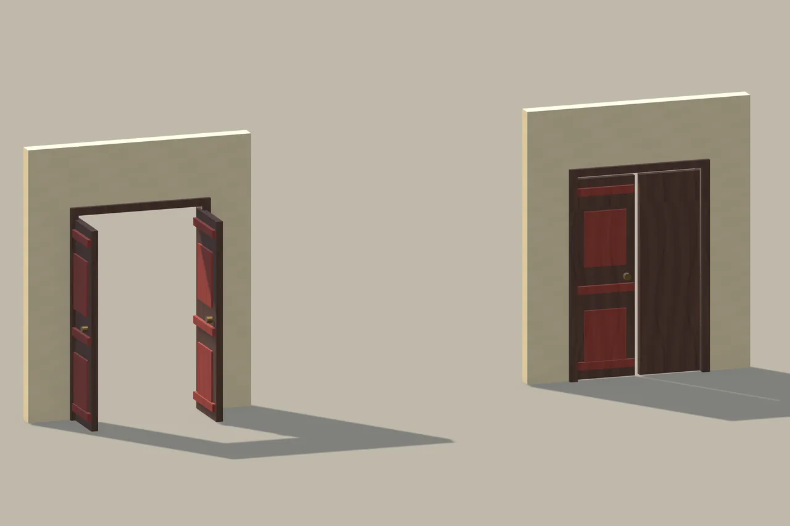

Chang’an Modular Architecture
From a single bay to a courtyard.

From a single bay to a courtyard.
Timber bays, tiled roofs and everyday furnishings form a flexible language for courtyard houses, shops, towers and garden pavilions.
104 distinct modules
14 assembled examples
3 metre bay system
Local technical candidate · Not listed on the Asset StoreGeometry budget
Triangle counts from the candidate’s Unity mesh inventory. “Tris” means triangles, not authoring polygons.
| Content / configuration | Triangles |
|---|---|
| Unique module library, counted once | 80,632 |
| Largest individual module | 13,152 |
| Assembled example range | 8,244–181,660 |
| Corrected fortified manor example | 181,660 |
104 distinct modules. Assembled examples repeat those modules, so their instance totals can exceed the unique-library total. No authored LOD meshes. The layout revision changes positions only; mesh triangle counts are unchanged.
Build with a shared vocabulary.
Start with a 3 metre structural bay. Foundations, columns, beams and wall openings establish the footprint; matching roof strips repeat along the building. Roof families are authored for 3 metre and 6 metre spans and should be selected as families.
The fourteen complete examples are editable arrangements of the same 104 modules, rather than fourteen unrelated fused models. Their Structure, Roof, Doors and Furnishings groups keep construction and dressing accessible. Adjust installation pivots and rotation in metres; no automatic building generator is included.
Use a residence as a starting point, change the bay count, choose a compatible roof family and dress the interior. Review eave clearance between neighbouring buildings. The corrected manor now leaves a 0.66 metre gap between the kitchen and granary roof bounds.
Inside the module library
| Family | Modules | Tris · each once |
|---|---|---|
| Foundations & steps | 10 | 884 |
| Timber structure | 11 | 924 |
| Walls & openings | 15 | 1,868 |
| Roof families | 15 | 54,556 |
| Courtyard pieces | 11 | 1,736 |
| Fortification pieces | 4 | 704 |
| Furniture & props | 38 | 19,960 |
Fourteen assembled starting points
| Example | Instances | Tris |
|---|---|---|
| Residence · 9 × 6 m | 54 | 50,556 |
| Compact house · 6 × 3 m | 33 | 26,036 |
| Merchant shop · 9 × 6 m | 55 | 51,864 |
| Inn · 12 × 6 m | 65 | 64,508 |
| Scholar study · 6 × 6 m | 44 | 39,920 |
| Kitchen · 6 × 3 m | 35 | 27,980 |
| Raised granary · 6 × 3 m | 37 | 26,396 |
| Official open hall · 9 × 6 m | 44 | 29,200 |
| Gatehouse · 9 × 3 m | 38 | 34,272 |
| Two-storey watchtower | 28 | 8,244 |
| Garden pavilion · 6 × 6 m | 32 | 13,896 |
| Corridor & pavilion link | 63 | 54,756 |
| Workshop · 9 × 6 m | 52 | 49,992 |
| Fortified courtyard manor | 281 | 181,660 |
Exploded and cutaway images below are labelled inspection views. They do not change the assembled product. Continuous L/T valley roof joins and xieshan roofs remain outside the kit’s scope.
A closer look
Select an image to explore




















Inside the project
Meter-scale installation pivots and reusable 3 m / 6 m roof families. Includes residence, merchant shop, inn, study, granary, gatehouse, tower and fortified manor examples, with accessible roof and furnishing layers.
Tested configuration
Unity 6000.6.0f1
Universal Render Pipeline 17.6.0
Windows · Direct3D 11 · Linear
Other Unity versions, render pipelines and platforms have not been verified. No target frame rate is promised.
Scope & limitations
No authored LODs, automatic door system, NavMesh or baked lighting. Continuous L/T valley roof joins and xieshan roofs are outside scope. Corridor roof drainage gaps and moon-gate thresholds are intentional.